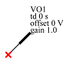

Prev
Measure Probe
Up
Built-in Devices (Parts)
Stim
Next
Output Probe

Property Name
Type
Keyword
Units
(Default) Value
default reference
string
VO?
reference
string
delay
float
td
s
0 s
voltage offset
float
offset
V
0 V
voltage gain
float
gain
1.0
The output probe is used in
Virtual Probing↑
and
Simulation↑
applications to specify output waveforms to be produced as a result of the calculation. See
Output Probes for Simulation↑
and
Output Probes for Virtual Probing↑
.
When the waveforms are produced as a result of the calculation, you have the capability of applying gain, offset and delay to the resulting waveform.
Prev
Measure Probe
Up
Built-in Devices (Parts)
Stim
Next